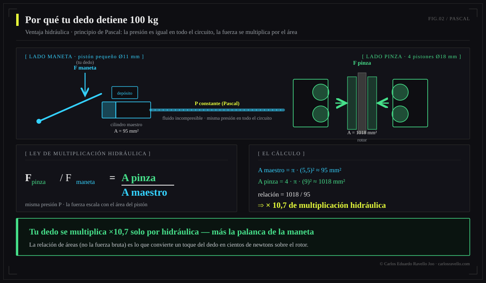

A gama alta 2025-2026 é dominada por pinças de 4 pistões de 18 mm e uma clara tendência ao óleo mineral. Em potência bruta lideram SRAM Maven e o novo Brembo GR-PRO (abril 2026, herança MotoGP). Shimano XTR M9220 (2025) corrigiu o ponto de mordida errante com um mineral de baixa viscosidade. Magura MT7, Hope Tech 4 V4 e TRP DHR Evo completam o topo. A escolha real não é "o mais potente", e sim o que equilibra potência, modulação, dissipação e suporte para sua disciplina.
Fechamento de mercado da Enciclopédia do Freio Hidráulico. Aqui não vendemos marcas: lemos a física de cada sistema (ver DOT vs mineral e sangria vs serviço) para que distribuidores, oficinas e ciclistas decidam com critério, não com marketing.

Comparativo da gama alta 2025-2026
| Freio | Pistões | Fluido | Disciplina | Nota-chave |
|---|---|---|---|---|
| Brembo GR-PRO | 4 × 18 mm | Mineral (próprio) | DH / Enduro | Estreia abr-2026, herança MotoGP, manete 3 posições, rotores 200-220 mm |
| SRAM Maven | 4 × 18 mm | Mineral | DH / Enduro | Referência de potência bruta de série |
| Shimano XTR M9220 | 4 pistões | Mineral (baixa visc.) | Enduro / Trail | 2025: corrige mordida errante e ruído das pastilhas |
| Magura MT7 | 4 pistões | Mineral (Royal Blood) | DH / Enduro | Potência e modulação de referência, muito ajustável |
| Hope Tech 4 V4 | 4 pistões | DOT | Enduro / DH | Usinado CNC, reparável, ajuste fino de manete |
| TRP DHR Evo | 4 pistões | Mineral | DH | Validado no circuito DH World Cup |
Dados de especificação de fabricante e imprensa especializada (jun-2026); valores de potência "de referência" são qualitativos, não um ranking de laboratório.
O que realmente mudou nesta geração
A migração ao óleo mineral
O movimento mais forte de 2025-2026 é a consolidação do óleo mineral no topo: Shimano, Magura e TRP já o usavam, a SRAM trouxe parte de sua gama (DB8 e a própria Maven) e a Brembo entrou diretamente com um mineral de fórmula própria. Só a Hope mantém DOT com convicção. O mineral ganha por estabilidade térmica prática, por não atacar pinturas e por não ser tóxico. O detalhe está em cada fórmula —por isso nunca se misturam—.
A Brembo entra no MTB
Que a Brembo —referência absoluta da frenagem em moto e auto— lance um sistema de bicicleta (GR-PRO) marca um antes e um depois: traz arquitetura de pistão e gestão térmica de competição a um mercado que historicamente improvisava. Sua estreia no downhill (Specialized Gravity) e o preço premium (~800 €) o posicionam como objeto de desejo da gama DH.
A Shimano corrige seu calcanhar de Aquiles
O XTR M9220 ataca de frente o "wandering bite point" —aquele ponto de mordida que se movia com o calor— e o ruído das pastilhas, as duas queixas que perseguiam a Shimano há anos. Consegue isso com um óleo mineral de baixa viscosidade e redesenho de pinça, sem perder sua modulação característica.
Mais potência: pistões ou rotor?
A potência de um freio nasce de duas alavancas físicas: a hidráulica (mais e maiores pistões = mais força de aperto, princípio de Pascal) e a geométrica (rotor maior = mais torque por raio e mais superfície para dissipar calor). Para descidas longas, o limite real costuma ser térmico: por isso um rotor de 200-220 mm muitas vezes rende mais que um pistão extra. A física completa está no pilar.

Para quem é cada um
Downhill / bikepark: Brembo GR-PRO, SRAM Maven ou Magura MT7 com rotores 220/200 mm.
Enduro: XTR M9220, Hope Tech 4 V4 ou TRP DHR Evo.
Trail / all-mountain: versões de 2 pistões das mesmas famílias, mais leves.
Reparabilidade e tuning: Hope (CNC, peças a longo prazo).
BikeLab Studio.
Perguntas Frequentes
Qual é o freio de MTB mais potente em 2026?
Em frenagem pura, SRAM Maven e o novo Brembo GR-PRO lideram, ambos com 4 pistões de 18 mm. A Maven é a referência de potência de série; a GR-PRO da Brembo (abril 2026, herança MotoGP) mira o mesmo segmento DH/enduro. Magura MT7 e Hope Tech 4 V4 ficam muito perto.
O que há de novo no Shimano XTR M9220?
Óleo mineral de baixa viscosidade e pinça redesenhada que corrigem o "ponto de mordida errante" e o ruído das pastilhas, as duas queixas históricas da Shimano, sem perder sua modulação.
Vale a pena o Brembo GR-PRO para bicicleta?
Traz know-how de MotoGP ao MTB: 4 pistões de 18 mm, mineral próprio, rotores 200-220 mm de 2,3 mm e manete de 3 posições (~800 €). Aposta premium para DH/enduro; para trail ou XC há opções mais leves e econômicas.
Mineral ou DOT na gama alta 2026?
A tendência premium é mineral: Shimano, Magura, TRP e Brembo GR-PRO; a SRAM migrou parte (DB8, Maven). A Hope segue com DOT. O mineral ganha por estabilidade, não danificar pintura e não ser tóxico. Ver DOT vs óleo mineral.
Mais pistões ou mais diâmetro de rotor?
Ambos somam: mais/maiores pistões aumentam a força de aperto; um rotor maior aumenta o torque e dissipa mais calor. Em descida longa o limite é térmico, então o rotor grande (200-220 mm) costuma aportar mais que um pistão extra.
Referências
- Pinkbike — Lançamento Brembo GR-PRO (abril 2026) e cobertura de gama alta.
- BikeRadar — comparativos de freios MTB 2025-2026 (Maven, XTR M9220, MT7).
- Especificações de fabricante: SRAM, Shimano, Magura, Hope, TRP, Brembo.
- BikeLab Studio — Enciclopédia do Freio (física e fluido).